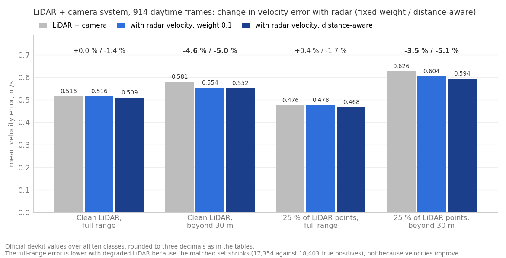

nuScenes, inference-only late fusion on the 914 daytime validation frames of blob 01 with a random 25 percent of the LiDAR points kept. 12 October 2026. This report stands beside REPORT.md, the daytime study of 10 October, and REPORT_enhanced.md, the day-and-night study of 11 October; both are unchanged.
Degrading the LiDAR to a random quarter of its points costs the LiDAR plus camera system 1.7 NDS points and 3.6 mAP points, and radar's contribution stays the size it was with clean LiDAR: nothing at full range, and a 3.5 percent cut in far-range velocity error with the fixed weight or 5.1 percent with the distance-aware weight, against 4.6 and 5.0 percent with clean LiDAR. The question behind the run was whether radar contributes more to the fused system once the LiDAR itself is weaker. On this degradation it does not, measurably: the refitted far-range radar weights rise, which says the fusion leans harder on radar when the LiDAR's own velocities get noisier, but the error it removes is about the same, and the difference between the two conditions is within the noise of 914 frames. All numbers come from the official nuScenes devkit on the same validation frames, ground truth, camera detections and fusion rules as the daytime report, with public pretrained detectors and no training.

Mean velocity error of the LiDAR + camera system without radar, with the fixed radar weight and with the distance-aware weight, on clean LiDAR and on 25 percent of the points, at full range and beyond 30 m. The labels above each group are the relative change with the fixed and the distance-aware weight.
Everything except the LiDAR point cloud is the daytime report's: the same 914 validation keyframes of blob 01, the same ground truth, the same camera detections, the same radar association, fusion rules and evaluation. The LiDAR detections were regenerated with the point cloud thinned before the detector.
| Item | Detail |
|---|---|
| Data | nuScenes v1.0 trainval, blob 01: 85 daytime scenes, Boston and Singapore, dry; 62 training scenes (2,462 keyframes) used to fit the velocity weights, 23 validation scenes (914 keyframes) for the numbers |
| Degradation | A uniform random 25 percent of the points of the aggregated cloud (keyframe plus nine sweeps), applied by a PointSample step after the multi-sweep loader, one random draw, on validation and training frames alike. The detector is the published checkpoint, not retrained |
| What it stands for | Sparse returns, as from a cheaper or longer-range sensor. Not weather: rain and fog remove points selectively, by range and reflectivity, and add clutter |
| LiDAR detector | CenterPoint with pillar encoder, MMDetection3D checkpoint, inference on Colab (T4, 17 minutes for 3,376 frames) |
| Camera detector | FCOS3D, MMDetection3D checkpoint, the clean detections of the daytime report |
| LiDAR + camera | LiDAR-primary merge: a camera box is kept only where no same-class LiDAR box lies within 2.5 m |
| Radar | All five radars, devkit validity filters, ego-motion-compensated radial velocity in the global frame; a return belongs to a box when it falls inside the footprint enlarged by 1 m |
| Using radar | Velocity: a camera-origin box takes the mean radar velocity of its returns; a LiDAR-origin box blends a fraction of radar velocity into its own, either a single weight fitted on training frames or one weight per distance bucket and box origin. Re-scoring: a logistic re-ranker over detector score, range, class and radar features, five-fold cross-validated across the validation scenes |
| Metrics | nuScenes Detection Score (NDS), mAP, and the mean true-positive errors for translation (mATE) and velocity (mAVE); all ten classes are present, so the official values are directly comparable with the daytime report |
The degradation thins the detector's output less than it thins the cloud: on the validation frames it returns 115 boxes per frame instead of 119, and 29,386 boxes above score 0.3 instead of 31,816 (7.6 percent fewer). What it loses are the small and the far objects.
The fused system loses accuracy at every range and radar velocity leaves that loss untouched; the velocity gain beyond 30 m is the one of the daytime report, give or take the noise. Official devkit values, lower error is better.
| Range | System | NDS | mAP | mAVE, m/s | NDS, 25 % LiDAR | mAP, 25 % LiDAR | mAVE, 25 % LiDAR |
|---|---|---|---|---|---|---|---|
| Full | LiDAR | 0.578 | 0.483 | 0.522 | 0.562 | 0.445 | 0.476 |
| Full | LiDAR + camera | 0.579 | 0.486 | 0.516 | 0.562 | 0.450 | 0.476 |
| Full | + radar velocity, 0.1 | 0.579 | 0.486 | 0.516 | 0.562 | 0.450 | 0.478 |
| Full | + radar velocity, distance-aware | 0.580 | 0.486 | 0.509 | 0.563 | 0.450 | 0.468 |
| Full | + radar re-scoring | 0.568 | 0.469 | 0.545 | 0.547 | 0.434 | 0.541 |
| Beyond 30 m | LiDAR | 0.400 | 0.257 | 0.574 | 0.369 | 0.213 | 0.634 |
| Beyond 30 m | LiDAR + camera | 0.399 | 0.257 | 0.581 | 0.370 | 0.215 | 0.626 |
| Beyond 30 m | + radar velocity, 0.1 | 0.401 | 0.257 | 0.554 | 0.372 | 0.215 | 0.604 |
| Beyond 30 m | + radar velocity, distance-aware | 0.402 | 0.257 | 0.552 | 0.373 | 0.215 | 0.594 |
| Beyond 30 m | + radar re-scoring | 0.389 | 0.236 | 0.559 | 0.361 | 0.197 | 0.622 |
The left group is the clean LiDAR of the daytime report, the right group the same pipeline with 25 percent of the points. The translation error (mATE) of the fused system goes from 0.310 to 0.330 m at full range and from 0.520 to 0.548 m beyond 30 m, and radar leaves it unchanged, as it must.
The full-range velocity error falls under degradation (0.516 to 0.476 m/s) because the set of matched objects changes, not because the velocities improve: the degraded detector finds 17,354 true positives instead of 18,403 and loses the far, hard ones first, and the error is averaged over what is found. Beyond 30 m, where the matched set is more alike, the error rises from 0.581 to 0.626 m/s as expected. Comparisons between systems within one condition are unaffected by this; comparisons of the same system across conditions should use the far-range rows.
Per class and per box origin the pattern is the clean one, with every slice moving a few tenths of a percent toward radar and none moving enough to call a result.
| Range | System | Car | Truck | Pedestrian | Motorcycle |
|---|---|---|---|---|---|
| Beyond 30 m, clean | LiDAR + camera | 0.457 | 0.340 | 0.291 | 1.243 |
| Beyond 30 m, clean | + radar velocity | 0.442 | 0.315 | 0.289 | 1.250 |
| Beyond 30 m, 25 % LiDAR | LiDAR + camera | 0.538 | 0.378 | 0.342 | 1.563 |
| Beyond 30 m, 25 % LiDAR | + radar velocity | 0.513 | 0.355 | 0.340 | 1.539 |
Velocity error in m/s by class beyond 30 m, fixed weight 0.1. Radar removes 4.6 percent of the far car error with degraded LiDAR against 3.3 percent clean, 6.1 against 7.4 percent on trucks, nothing on pedestrians in either condition, and 1.5 percent on motorcycles where the clean run showed no change. The differences between conditions are a few hundredths of a metre per second on a few hundred objects.
The box-origin breakdown, computed on the fused system's true positives at score 0.3 and above with the analysis script of the daytime report, says the same:
| Slice of the fused true positives | Clean: n, change with radar | 25 % LiDAR: n, change with radar |
|---|---|---|
| All | 18,403, -1.4 % | 17,354, -1.8 % |
| Moving, beyond 30 m | 853, -5.2 % | 785, -5.6 % |
| Moving, with radar returns | 1,443, -3.9 % | 1,393, -4.9 % |
| 30 to 40 m | 2,874, -3.2 % | 2,525, -3.3 % |
| 40 to 50 m | 1,197, -4.1 % | 1,054, -5.6 % |
| LiDAR-origin boxes | 18,289, -0.8 % | 17,193, -1.4 % |
| Camera-origin boxes | 114, -34.0 % | 161, -19.1 % |
| Parked, under 0.5 m/s | 12,619, +1.1 % | 11,930, +1.4 % |
The camera-origin boxes, the ones radar helps most, grow from 114 to 161 because fewer LiDAR boxes are there to suppress them, and their velocity gain shrinks from 34 to 19 percent because the extra survivors are harder objects. The share of true positives with at least one radar return is unchanged, 52 percent clean and 53 percent degraded. Parked objects get slightly worse with radar in both conditions, as in the daytime report: the radar's radial velocity on a stationary box carries a little noise that the LiDAR's own near-zero estimate does not.
Letting radar re-rank the boxes' confidence costs accuracy with degraded LiDAR as it did with clean, and slightly more: NDS 0.562 to 0.547 at full range (clean 0.579 to 0.568), mAP 0.215 to 0.197 beyond 30 m (clean 0.257 to 0.236). A detector that has lost three quarters of its points still ranks its boxes better than a linear model over radar counts, so there is nothing for the re-ranker to fix, and radar returns on false positives mislead it as before. The re-ranker was refitted by five-fold cross-validation across the 23 validation scenes on the degraded detections, so it had every chance.
The notebook colab/nuscenes_inference.ipynb is run on blob 01 with LIDAR_KEEP_RATIO = 0.25 and SKIP_CAMERA = True; its inference cell inserts the PointSample step after the multi-sweep loader and writes centerpoint_keep25.json. Then, from the project folder:
.venv\Scripts\python.exe scripts\fuse.py --dataroot data\nuscenes --lidar detections\centerpoint_keep25.json --camera detections\fcos3d.json --out results\fused_keep25 --fit-on cv
.venv\Scripts\python.exe scripts\blend_by_distance.py --dataroot data\nuscenes --lidar detections\centerpoint_keep25.json --camera detections\fcos3d.json --base results\fused_keep25\L+C.json --out results\fused_keep25_la\L+C+Ra.json --summary results\blend_by_distance_keep25.json
.venv\Scripts\python.exe scripts\evaluate.py --dataroot data\nuscenes --results results\fused_keep25 --out results\eval_keep25
.venv\Scripts\python.exe scripts\evaluate.py --dataroot data\nuscenes --results results\fused_keep25 --out results\eval_keep25 --min-range 30
.venv\Scripts\python.exe scripts\evaluate.py --dataroot data\nuscenes --results results\fused_keep25_la --out results\eval_keep25_la
.venv\Scripts\python.exe scripts\evaluate.py --dataroot data\nuscenes --results results\fused_keep25_la --out results\eval_keep25_la --min-range 30
.venv\Scripts\python.exe scripts\analyze_lc_radar.py --dataroot data\nuscenes --base results\fused_keep25\L+C.json --radar results\fused_keep25\L+C+Rv.json --lidar results\fused_keep25\L.json --out results\analysis_lc_radar_keep25.json
.venv\Scripts\python.exe scripts\degradation_tables.py --out results\degradation_keep25.json
.venv\Scripts\python.exe scripts\make_degradation_figure.py
The --blend-a option of fuse.py pins the LiDAR velocity weight for a like-for-like row; it was not needed here because the refit returned the clean value. The clean rows come from results/eval/, results/eval_la/ and results/analysis_lc_radar.json of the daytime report; the clean far-range summary was re-evaluated once to add per-class errors, with identical headline values.
Files: detections/centerpoint_keep25.json (3,376 keyframes, Colab run of 12 October 2026); results/fused_keep25/ (nine fused result files) and results/fused_keep25_la/L+C+Ra.json; results/eval_keep25/summary_*.json and results/eval_keep25_la/summary_*.json (devkit metrics with per-class AP and errors); results/blend_by_distance_keep25.json (refitted weights); results/analysis_lc_radar_keep25.json (box-origin breakdown); results/degradation_keep25.json (the tables above). The nuScenes data is not redistributed.